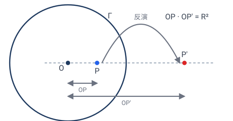
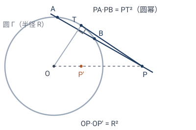
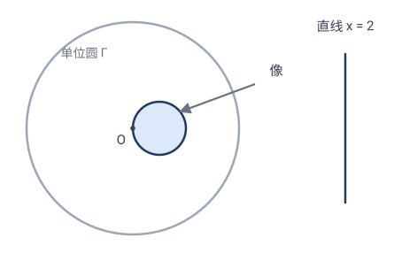
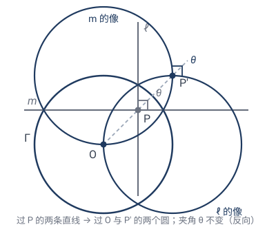
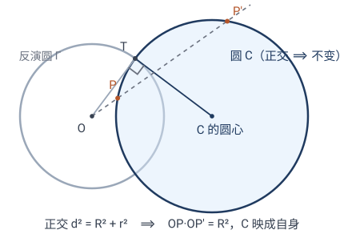
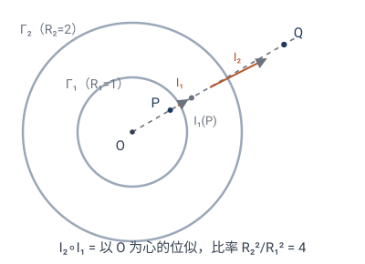
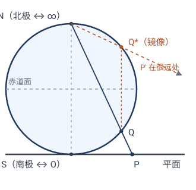

反演变换：把直线变圆的魔法
从第 2 章到第 5 章，我们沿着一把"约束逐级放松"的梯子往下走：等距（保距）→ 相似（保角）→ 仿射（保平行）→ 射影（只保共线）。它们的共同点是把直线映成直线。
本章的反演不在这把梯子上：它能把直线变成圆、把圆变成直线——连射影都保住的"共线"，它都丢了。但它另有所保：角（虽然方向反转）。所以反演属于另一个家族——共形几何（保角几何），一个与射影层级交叉的独立世界（第 7 章会把这件事彻底看清，见第 7 章题 7.5）。它来自复分析和"保角映射"的世界，是几何工具箱里最神奇的扳手之一。
💡 本章与前几章的关系：反演不是对前面层级的"再放松一级"，而是另开一条线——它保住的是相似那一级的不变量（角），却放弃了仿射、射影都保住的直线性。读的时候盯住两个问题：它把什么映成什么（6.2）、它保住了什么（6.3、6.7）。
6.1什么是反演
固定一个圆 $\Gamma$（圆心 $O$、半径 $R$）。圆内一点 $P$ 沿射线 $OP$ "弹"到圆外对应位置 $P'$，使得
这就是关于圆 $\Gamma$ 的反演（inversion），记 $\mathbf{I}_\Gamma$。
直观上：反演把"靠近圆心"的点推到"远离圆心"，反之亦然，圆周上的点不动，圆心和"无穷远"互换。

坐标公式（单位圆）
最常用的是关于单位圆（$O$ 为原点，$R=1$）的反演。点 $(x,y)$ 沿原点方向"弹"，距离从 $r$ 变成 $1/r$（因为 $r\cdot r'=1$），方向不变：
用复数写更优雅：$z\mapsto\dfrac{1}{\bar z}$（取倒数 + 共轭；共轭是为了保证"沿原射线方向"，因为 $1/\bar z$ 与 $z$ 同幅角）。
✏️ 手算几个点（单位圆反演）：
- $(2,0)$：$r^2=4$，$\mapsto(2/4,0)=(\tfrac12,0)$。点从距原点 $2$ 弹到 $\frac12$，$2\times\frac12=1=R^2$ ✓。
- $(1,1)$：$r^2=2$，$\mapsto(\tfrac12,\tfrac12)$。距离 $\sqrt2\to\frac{1}{\sqrt2}$，$\sqrt2\cdot\frac1{\sqrt2}=1$ ✓。
- $(1,0)$（在圆周上）：$\mapsto(1,0)$，不动 ✓。
- 原点 $(0,0)$：无定义（"弹到无穷远"）。这正是反演在无穷远点处的奇点。
代数面孔：圆幂的视角
定义式 $OP\cdot OP'=R^2$ 的左边，正是圆幂的形状。回忆圆幂定理：固定点 $O$ 与圆 $C$，任取过 $O$ 的直线交 $C$ 于两点 $X,Y$，则 $OX\cdot OY$ 是定值（只依赖 $O$ 与 $C$，与直线的选法无关），叫做 $O$ 关于 $C$ 的圆幂；$O$ 在圆外时，它等于切线长的平方（设圆心距 $d$、半径 $r$，圆幂 $=d^2-r^2$）。
于是反演的定义可以换一种说法：$P,P'$ 互为（关于 $\Gamma$ 的）反演像 ⟺ 过 $P,P'$ 的任意一个圆，$O$ 关于它的圆幂都恒等于 $R^2$。反演点对不再只是"两个满足距离等式的点"，而是"关于 $O$ 的圆幂恒为 $R^2$ 的点对"——这把反演从距离语言翻译成了圆幂语言。

✏️ 手算验证"圆幂恒定"：单位圆反演，$O=(0,0)$，$P=(2,0)$、$P'=(\frac12,0)$（它们互为反演像）。
- 取以 $PP'$ 为直径的圆：圆心 $(\frac54,0)$、半径 $\frac34$。$O$ 关于它的圆幂 $=\bigl(\frac54\bigr)^2-\bigl(\frac34\bigr)^2=\dfrac{25-9}{16}=1=R^2$ ✓。
- 换一个过 $P,P'$ 的圆：圆心取在 $PP'$ 的中垂线上，比如 $(\frac54,1)$，半径 $\sqrt{(\frac34)^2+1}=\frac54$。$O$ 到圆心的距离为 $\sqrt{(\frac54)^2+1}=\frac{\sqrt{41}}{4}$，圆幂 $=\dfrac{41}{16}-\dfrac{25}{16}=1$ ✓。
换哪个圆，圆幂都是 $1$——这就是"$P,P'$ 互为反演像"的代数签名。
💡 圆幂语言马上有大用：$O$ 关于圆 $C$ 的圆幂 $=R^2$ 还有另一副面孔——从 $O$ 向 $C$ 作的切线长恰好是 $R$，即切点落在 $\Gamma$ 上、两圆正交。这是 6.4 的主角："与反演圆正交的圆，在反演下不变"。
6.2反演的招牌绝活：直线 ↔ 圆
反演最反直觉也最强大的性质：
定理： (a) 过反演中心 $O$ 的直线，反演后仍是**过 $O$ 的直线**； (b) 不过 $O$ 的直线，反演后变成**过 $O$ 的圆**； (c) 不过 $O$ 的圆，反演后变成**不过 $O$ 的圆**； (d) 过 $O$ 的圆，反演后变成**不过 $O$ 的直线**。
一句话：直线和圆在反演下互通（取决于是否过中心）。
手算验证 (b)：直线 $x=2$ 反演成圆
直线 $x=2$ 不过原点。其上点形如 $(2,t)$，$t\in\mathbb{R}$。反演：
我们来消去 $t$，找 $(u,v)$ 满足的方程。注意
所以 $u^2+v^2=\dfrac{u}{2}$，整理：
这是**圆心 $(\frac14,0)$、半径 $\frac14$ 的圆！而且它过原点**（代入 $(0,0)$ 成立）。

✏️ 验证端点：直线 $x=2$ 上的 $(2,0)$ 反演成 $(\frac12,0)$，应在圆上：$(\frac12-\frac14)^2+0=(\frac14)^2$ ✓。直线"跑向无穷"的点（$t\to\infty$），反演 $\to(0,0)$——所以圆经过原点，正是直线"无穷远端"被反演拉回来的结果。✓
手算验证 (c)：圆 $(x-2)^2+y^2=1$ 反演成圆
这个圆圆心 $(2,0)$、半径 $1$，不过原点（原点到圆心距离 $2>1$）。按定理 (c)，它应反演成一个不过原点的圆。不用逐点算，只看一条直径就够了：
- 离原点最近的点 $(1,0)$：$r^2=1$，在反演圆周上，不动 $\mapsto(1,0)$；
- 离原点最远的点 $(3,0)$：$r^2=9$，$\mapsto(\frac13,0)$。
这两点在原圆上是一对对径点（直径两端），它们的像也应是像圆的对径点。所以像圆以 $(1,0)$ 与 $(\frac13,0)$ 为直径两端：**圆心 $(\frac23,0)$、半径 $\frac13$**。
✏️ 抽查第三点：原圆上 $(2,1)$，$r^2=5$，$\mapsto(\frac25,\frac15)$。到像圆心 $(\frac23,0)$ 的距离：$\sqrt{(\frac{4}{15})^2+(\frac15)^2}=\sqrt{\frac{16+9}{225}}=\frac{5}{15}=\frac13$ ✓。
💡 一个易错点：原圆心 $(2,0)$ 反演到 $(\frac12,0)$，不是像圆的圆心 $(\frac23,0)$！反演把"圆"映成"圆"，但不把圆心映成圆心——圆心没有特殊地位，这与等距、相似的直觉完全不同。
直观理解
- 过中心的直线：直线上每点都在过 $O$ 的射线上，反演只是把它沿射线挪位置，仍在该射线上 → 仍是直线。
- 不过中心的直线：离 $O$ 越远的点，反演后越靠近 $O$；最近的点（垂足）反演后最远。这些像点描出一条"闭合"的曲线——一个过 $O$ 的圆。
- 过中心的圆：圆上离 $O$ 近的弧反演成远弧，整个圆"展开"成一条不过 $O$ 的直线。
一般证明（坐标法）
上面只验证了一条具体直线 $x=2$。下面证任意不过中心的直线都反演成过中心的圆。
设反演圆是单位圆（$O$ 为原点）。不过原点的直线总可写成（把方程 $ax+by+c=0$ 除以 $-c\ne0$）：
反演 $(x,y)\mapsto(u,v)=\dfrac{(x,y)}{x^2+y^2}$ 是自逆的（做两次回到原处），所以逆变换同为 $x=\dfrac{u}{u^2+v^2},\;y=\dfrac{v}{u^2+v^2}$。代入直线方程：
整理成圆的标准方程：
这是**圆心 $\bigl(\tfrac{\alpha}{2},\tfrac{\beta}{2}\bigr)$、半径 $\tfrac{\sqrt{\alpha^2+\beta^2}}{2}$ 的圆**。把 $(0,0)$ 代入成立，所以它**过原点 $O$**。$\square$
💡 对照具体例子 $x=2$（即 $\alpha=\tfrac12,\beta=0$）：圆心 $(\tfrac14,0)$、半径 $\tfrac14$——正是上面手算的结果。一般证明把"巧合"变成了"必然"。（其余三条 (a)(c)(d) 同理可用坐标法验证，留作习题。）
💡 思想点：在反演眼里，"直线"和"圆"不是两类东西，而是同一类（都叫"广义圆"），只是看它过不过反演中心。这种"把对立概念统一"的能力，是高级几何的标志。
6.3反演保角（反向）
反演不保距（它把近的拉远、远的拉近），也不保直线。但它保一件大事——角。
定理：反演是保角变换（conformal）：两条曲线的夹角，等于它们反演后的夹角。但方向反转（左手变右手）。
直观证明草图：反演在每点附近"近似于"一个反射 + 放缩，而反射保角、放缩保角，所以夹角不变（只是方向反了）。下面给出能算的证明（用复数）。
证明（反演保角）：把单位圆反演写成复数形式 $I(z)=1/\bar z$（取共轭是为保证"沿原射线方向"，见 6.1）。固定一点 $z_0\ne0$，给它一个小位移 $\mathrm{d}z$，看像点怎么动（一阶近似）：
所以位移 $\mathrm{d}z$ 被映成 $\displaystyle -\frac{1}{\bar z_0^{\,2}}\,\overline{\mathrm{d}z}$。拆成两步看：
- 取共轭 $\mathrm{d}z\mapsto\overline{\mathrm{d}z}$：关于实轴的反射——把方向角 $\theta$ 变成 $-\theta$（角的大小不变，方向反转）；
- 乘以 $-\dfrac{1}{\bar z_0^{\,2}}$：一个固定复数，作用是旋转 + 均匀放缩（所有方向的幅角同加一个常数、模长同乘一个常数）——同样不改方向之间的夹角。
两步合起来：每个方向都被转了同一个角度（再统一放缩），方向之间的夹角纹丝不动；只是因为共轭，整体方向反转。这正是"反向保角"。$\square$
💡 关键在于：反演在每点的局部线性化形如 $\mathrm{d}z\mapsto(\text{复数})\cdot\overline{\mathrm{d}z}$，即"反射 × 相似"。反射和相似都保角，复合保角。其中"$\overline{\mathrm{d}z}$"带来"反向"，"复数乘法"带来"保角"——分工明确。
✏️ 手算感受：两条直线 $y=0$（$x$ 轴）和 $x=0$（$y$ 轴）在原点垂直。它们都过反演中心 $O$，反演后仍是 $y=0$ 和 $x$ 轴，仍然垂直 ✓。再看 $y=0$ 和 $y=x$（夹角 $45°$），都过 $O$，反演后仍是这两条直线，夹角仍 $45°$ ✓。

💡 复分析的视角：复函数 $z\mapsto 1/z$（去掉共轭）是"解析"的（处处保角，正向）。加上共轭 $z\mapsto 1/\bar z$（反演）则"反向保角"。复分析里一大类莫比乌斯变换 $z\mapsto\dfrac{az+b}{cz+d}$（$ad-bc\ne0$）正是反演、旋转、放缩、平移的复合——它们全体构成"保圆映射"的精华，是把复杂区域"驯服"成简单区域的法宝（反演如何生成这个家族，见 6.6）。
6.4正交圆与"反演不变的圆"
反演圆 $\Gamma$ 上的点逐点不动。还有一类圆更微妙：它整体不动（圆还是那个圆），但圆上的点都在动——它们是与 $\Gamma$ 正交的圆。
什么是正交
两圆相交于点 $T$，它们在 $T$ 处的夹角 = 两条切线的夹角 = 两条半径的夹角。夹角为 $90°$ 时称两圆正交。由勾股定理，正交有一个干净的代数判据：
（$d$ 为圆心距，$R,r$ 为两半径：交点处两半径垂直 ⟺ 圆心连线与两半径围成直角三角形。）
定理：正交 ⟺ 反演不变
定理：设圆 $C$ 不是反演圆 $\Gamma$ 本身。则
注意"映成自身"是整体的：圆上的点一般都在动（成对互换），只是像集合与原圆重合。
证明（用 6.1 的圆幂语言）：
(⇒) 设 $C$ 在反演下不变。取过 $O$ 的一条直线，交 $C$ 于两点 $P,Q$。反演把过 $O$ 的直线映成自身（6.2(a)）、把 $C$ 映成自身，所以 $P$ 的像仍是"这条直线与 $C$ 的交点"，即 $P'=Q$。由反演定义 $OP\cdot OQ=OP\cdot OP'=R^2$。直线是任取的，故 $O$ 关于 $C$ 的圆幂 $=R^2$。于是从 $O$ 向 $C$ 作的切线长 $=\sqrt{R^2}=R$：切点 $T$ 既在 $C$ 上，又满足 $OT=R$（即在 $\Gamma$ 上），且切线垂直于 $C$ 的半径 ⟹ 在 $T$ 处两圆半径互相垂直，两圆正交。
(⇐) 设 $C$ 与 $\Gamma$ 正交。由判据 $d^2=R^2+r^2$，$O$ 关于 $C$ 的圆幂 $=d^2-r^2=R^2$。任取过 $O$ 的直线交 $C$ 于 $P,Q$：$OP\cdot OQ=R^2$ 且 $Q$ 在射线 $OP$ 上 ⟹ $Q$ 正是 $P$ 的反演像。即 $C$ 上每一点的反演像仍在 $C$ 上，$C$ 整体不变。$\square$

✏️ 手算：$\Gamma$ 为单位圆（$O=(0,0)$，$R=1$），$C$ 的圆心为 $(2,0)$。正交要求 $4=1+r^2$，即 $r=\sqrt3$。此时 $x$ 轴交 $C$ 于 $2-\sqrt3\approx0.27$ 与 $2+\sqrt3\approx3.73$，乘积 $(2-\sqrt3)(2+\sqrt3)=4-3=1=R^2$ ✓——这两点互为反演像，$C$ 被反演"沿自己对折"。
对照：若 $r=2$（$1+4=5\ne4$，不正交），由 6.2(c)，$C$ 反演成另一个圆，不再是自己。
💡 直觉：正交的圆与 $\Gamma$ "互不亏欠"——反演只让 $C$ 上的点沿 $C$ 自己滑动（近点滑到远点），圆"在自己身上翻了个面"。这与 $\Gamma$ 上点的逐点不动形成对照：$\Gamma$ 是"不动的圆"，正交圆是"自洽的圆"。
💡 两处伏笔：习题篇 题 4（切割线定理）正是取一个与已知圆正交的反演圆，让它"自保"；而"与定圆正交的圆族"正是双曲几何（庞加莱圆盘模型）里"直线"的模样——第 7 章我们还会遇见它。
6.5用反演解题：把难问题变简单
反演的实战价值：它能把"涉及一堆相切圆"的难题，翻成一个简单题。因为反演保角（保相切），但可以改变圆的"形状、位置、大小"，于是能把乱七八糟的圆变成整齐的（比如全变成直线）。
经典：阿波罗尼斯问题
问题：给定三个圆，求作一个圆与它们都相切（古典三大作图难题之一的推广版）。
直接做很难。技巧：选一个合适的反演，把其中两个已知圆"翻成直线"（让反演中心落在它们交点上，则两圆 → 两直线）。于是问题变成："作一个圆与两条直线和第三个圆都相切"——这比原题简单得多。做完后，再反演回去（反演保相切），就得到答案。
经典：帕普斯圆链变"算盘珠"
两个圆 $C_1,C_2$ 相切于点 $T$，它们之间塞着一串两两相切的小圆（帕普斯链，每个小圆都与 $C_1,C_2$ 相切、且与相邻小圆相切）。直接求每个小圆的半径很繁琐。
技巧：把反演中心选在**切点 $T$**。$C_1,C_2$ 都过 $T$ ⟹ 反演成两条直线（6.2(d)）；它们在 $T$ 处相切（夹角 $0$），反演保角 ⟹ 两条像直线夹角也是 $0$，即互相平行。链上每个小圆都与 $C_1,C_2$ 相切 ⟹ 像圆夹在两条平行线之间、与两者都相切 ⟹ 它们大小全相同，像算盘上一排整齐的珠子。原题里要逐个算的半径，现在由"平行线间距 ÷ 2"一次给出——这就是本节元思想"翻到顺手位置"的实战（完整证明见 习题 3）。
💡 元思想：反演解题 = "找一个变换，把难情形翻成易情形，解完再翻回去"。这种"先变形、再求解、后还原"的策略，贯穿整个数学（积分里的换元、代数里的配方，都是这个套路）。
6.6反演的复合与莫比乌斯变换
一个反演是自逆的：做两次回到原处。那两个不同的反演复合起来是什么？答案出人意料地整洁——它不再是反演，而是第 3 章的老朋友。
手算：两个同心反演的复合
设 $\Gamma_1,\Gamma_2$ 都以 $O$ 为圆心，半径 $R_1,R_2$。先关于 $\Gamma_1$ 反演、再关于 $\Gamma_2$ 反演。点 $P$ 距 $O$ 为 $r$：第一步把它弹到距 $O$ 为 $R_1^2/r$，第二步再弹到
方向始终不变。净效果：以 $O$ 为心、比率 $R_2^2/R_1^2$ 的位似——一个相似变换！
✏️ 动手：$R_1=1$、$R_2=2$，$P$ 距 $O$ 为 $0.8$。$\mathbf{I}_{\Gamma_1}$：$0.8\mapsto 1/0.8=1.25$；$\mathbf{I}_{\Gamma_2}$：$1.25\mapsto 4/1.25=3.2$。净效果 $0.8\mapsto3.2$，恰好放大 $4=2^2/1^2$ 倍 ✓。

反演 × 反演 = 相似——这与第 2 章"反射 × 反射 = 旋转或平移"如出一辙：两个"翻面"叠起来，方向就正回来了（单个反演反向保角，两个反向复合成正向）。
一般情形：反演生成莫比乌斯群
不只是同心情形。把任意多个反演（圆的反演，加上直线的反射——直线可看作"半径无穷大的圆"）任意复合，得到的变换正是 6.3 末尾提到的莫比乌斯变换家族
（偶数个反演的复合，保向；奇数个则再多一个共轭，反向。）反过来，每个莫比乌斯变换都能拆成反演的复合。
定理（陈述，不证）：平面上所有"把广义圆映成广义圆"的变换，由反演生成；它们全体构成一个群——广莫比乌斯群（其中保向的一半是莫比乌斯群）。
💡 这正是第 7 章答案的预演：等距群由反射生成（第 2 章"反射生成一切等距"），共形几何的群由反演生成。反演之于共形几何，正如反射之于欧氏几何。爱尔兰根纲领的视角下，反演在"梯子之外"坐的那把椅子，就是这个群。
6.7反演的几何不变量
| 性质 | 反演下 |
|---|---|
| 角（大小） | ✓（反向保角） |
| 相切 | ✓（保角推论） |
| 圆 ↔ 直线（广义圆） | ✓（互换） |
| 距离 | ✗ |
| 直线 → 直线 | ✗（可能变圆） |
| 面积 | ✗ |
| 共线 | ✗（共线三点反演后不一定共线——除非原直线过中心） |
注意最后一行：反演不保共线！这点和射影、仿射都不同。所以反演不是射影变换（它不属于爱尔兰根纲领里那条经典层级）。它是"保角几何"（共形几何）家族的成员。
6.8球极投影：反演的三维面目
反演有一个"不体面"的地方：中心 $O$ 没有像，被"弹到无穷远"。这个奇点在三维里可以被治好——把球面请出来。
把球面铺在平面上
把一个球放在平面上，南极 $S$ 着地。从北极 $N$ 向球面上任一点 $Q$ 连线，延长交平面于 $P$。对应 $Q\leftrightarrow P$ 叫球极投影（stereographic projection）：它把整个球面（挖去 $N$）一对一地铺满整个平面。
- 南极 $S$ 映到平面原点 $O$；
- 赤道映成一个圆（取合适单位，就是单位圆）；
- 北极 $N$ 自己无处可去——它对应平面上的"无穷远点"。平面第一次有了一个看得见的 $\infty$。
关键事实：球面镜像 = 平面反演
把球面关于赤道面作镜像（上下翻面）：$Q\mapsto Q^*$。这个体面的三维操作，经球极投影读到平面上，恰好是关于单位圆的反演：
✏️ 手算验证：球半径 $\frac12$、放在平面 $z=0$ 上（球心 $(0,0,\frac12)$，$N=(0,0,1)$）。球面上高度为 $z$ 的点，到竖直轴的距离是 $\sqrt{z-z^2}$（球面方程 $x^2+y^2+\bigl(z-\frac12\bigr)^2=\frac14$ 化简即 $x^2+y^2=z-z^2$）。从 $N$ 投影，平面像的向径为
赤道镜像把 $z$ 换成 $1-z$，于是 $|OP'|=\sqrt{\dfrac{1-z}{z}}$，乘积
具体代入 $z=\frac34$：$|OP|=\sqrt3$、$|OP'|=\frac{1}{\sqrt3}$，乘积为 $1$ ✓。

💡 奇点消失了：平面上"不可定义"的 $O\leftrightarrow\infty$，在球面上只是两个普通点 $S\leftrightarrow N$ 的互换——反演的奇异性是"把三维体面操作压回二维"产生的投影假象。这也解释了为什么共形几何的真正家园是黎曼球面（复平面 + 一个无穷远点），而不是平面本身。第 5 章射影几何给平面添了一整条无穷远直线，这里只添一个点——两种不同的"补全"，各为其主。
6.9一个视觉奇观：反演把整个平面"翻个里外"
把一张世界地图（除了原点）做单位圆反演。靠近原点的细节被放大到无穷，远处的国家被压缩到原点附近。结果是另一张"里外翻面"的地图：南极变北极邻居、赤道附近被拉得巨大……但所有角度（海岸线的走向、国境线的夹角）都保持原样——所以地图的"局部形状"是对的，只是大小乱了。
这正是地图学里"保角投影"（如墨卡托投影）的精神：牺牲面积，保住角度，让航海者能画直线航向。反演是这种思想最纯粹的体现。
6.10本章小结
反演是前五章那把梯子之外的"另一条线"，对照着记：
- 定义：关于圆 $\Gamma$（圆心 $O$、半径 $R$）的反演满足 $OP\cdot OP'=R^2$（6.1）；单位圆情形 $z\mapsto 1/\bar z$。它是自逆的（做两次回原处），圆周上的点不动，圆心与无穷远互换。定义式左边是圆幂：过一对反演点的任一圆，$O$ 关于它的圆幂都是 $R^2$（6.1）。
- 招牌性质：直线 ↔ 圆（6.2）——过中心的直线/圆仍过中心（线变线、圆变线），不过中心的直线/圆互变（线变圆、圆变圆）。直线和圆统一为"广义圆"。圆心不映成圆心。
- 不变量：保角（反向）与相切（6.3、6.7）；不保距、不保直线、不保共线——所以它不属于射影层级，而属于共形几何。
- 正交圆：与反演圆正交（$d^2=R^2+r^2$）⟺ 反演下整体不变——圆上的点成对互换，而非逐点不动（6.4）。
- 复合：两个同心反演的复合 = 位似（比率 $R_2^2/R_1^2$）；任意反演的复合生成莫比乌斯群——"广义圆 → 广义圆"的变换群，反演之于共形几何正如反射之于欧氏几何（6.6）。
- 三维面目：球极投影下，平面反演 = 球面关于赤道面的镜像，$O\leftrightarrow\infty$ 即南极 ↔ 北极——奇点在三维里消失，共形几何的家园是黎曼球面（6.8）。
- 解题套路：选巧妙的反演中心，把难情形翻成易情形，解完再翻回去（6.5）——托勒密定理（圆变线）、切割线定理（正交圆自保）、相切圆链变平行线，见 习题篇。
- 位置：至此五类变换集齐——等距、相似、仿射、射影排成一把梯子，反演在梯子之外。下一章的爱尔兰根纲领将解释：梯子为什么是梯子，反演为什么在梯子外（答案：群不同）。
下一章我们把这些变换全部收进一个统一框架——爱尔兰根纲领。
下一章：第 07 章 · 爱尔兰根纲领
🧩 本章习题
手算题 6.1 反演点
单位圆反演下，求下列点的像：$(3,4)$、$(0,5)$、$(\frac35,\frac45)$。
查看解答 / 提示
答：$(3,4)$，$r^2=25$，$\mapsto(\frac{3}{25},\frac{4}{25})$；$(0,5)\mapsto(0,\frac15)$；$(\frac35,\frac45)$，$r^2=1$，在圆周上，不动 $\mapsto(\frac35,\frac45)$。
手算题 6.2 直线变圆
单位圆反演下，直线 $y=1$ 变成什么？写出圆心和半径。
查看解答 / 提示
答：点 $(t,1)$，反演 $(\frac{t}{t^2+1},\frac{1}{t^2+1})$。设 $(u,v)$，则 $u^2+v^2=\frac1{t^2+1}=v$，即 $u^2+(v-\frac12)^2=\frac14$，圆心 $(0,\frac12)$、半径 $\frac12$，过原点。
思考题 6.3 圆心反演到哪？
一个以原点为圆心、半径 $2$ 的圆，反演成什么？
查看解答 / 提示
答：圆上每点距原点 $2$，反演后距原点 $\frac12$，所以变成**以原点为心、半径 $\frac12$ 的圆（同心缩小）。一般地，圆心在反演中心的圆，反演成同心圆**，半径 $r\mapsto R^2/r$。
应用题 6.4 切线问题
单位圆外有一个圆 $C$（圆心 $(3,0)$，半径 $1$），它与单位圆外切。把整个图形单位圆反演，$C$ 变成什么？它和单位圆（反演不变）的关系如何？
查看解答 / 提示
提示：$C$ 不过原点（原点在 $C$ 内吗？$(3,0)$ 到原点 $3>1$，原点在 $C$ 外），所以 $C$ 反演成另一个圆。因反演保相切，像圆仍与单位圆相切。具体：$C$ 与单位圆切于 $(1,0)$（切点在单位圆周，反演不动），像圆也过 $(1,0)$ 并与单位圆相切。
进阶题 6.5 为什么反演保角？
提示：在每点附近，反演近似为"反射 + 均匀放缩"。反射保角、放缩保角，复合保角。试着计算反演在点 $(1,0)$ 附近的"局部线性化"，看它是否像一个反射乘以某个倍数。
查看解答 / 提示
讨论：反演的雅可比矩阵在每点都是"正交矩阵 × 标量"，正交矩阵保角，标量放缩保角——所以反演处处保角。这是共形映射的典型特征。
手算题 6.6 正交圆判定
$\Gamma$ 是单位圆（圆心 $O$ 为原点）。两个圆的圆心都在 $(2,0)$：$C_1$ 半径 $\sqrt3$，$C_2$ 半径 $2$。哪个在关于 $\Gamma$ 的反演下整体不变？
查看解答 / 提示
答：用正交判据 $d^2=R^2+r^2$（6.4）。$d=2$，$d^2=4$。$C_1$：$1+3=4$ ✓ 正交，反演下整体不变；$C_2$：$1+4=5\ne4$，不正交，反演成另一个圆（6.2(c)）。验证 $C_1$：$x$ 轴交它于 $2-\sqrt3$ 与 $2+\sqrt3$，乘积 $(2-\sqrt3)(2+\sqrt3)=4-3=1=R^2$，两点互为反演像 ✓。
手算题 6.7 两个同心反演的复合
$\Gamma_1$ 为单位圆、$\Gamma_2$ 半径 $3$，圆心都在原点 $O$。求复合 $\mathbf{I}_{\Gamma_2}\circ\mathbf{I}_{\Gamma_1}$ 把 $(2,0)$ 映到哪；这个复合是什么变换？
查看解答 / 提示
答：$\mathbf{I}_{\Gamma_1}(2,0)=\dfrac{(2,0)}{4}=\bigl(\frac12,0\bigr)$；半径 $3$ 的反演是 $z\mapsto 9z/|z|^2$，故 $\mathbf{I}_{\Gamma_2}\bigl(\frac12,0\bigr)=9\cdot\dfrac{(1/2,0)}{1/4}=(18,0)$。净效果 $(2,0)\mapsto(18,0)=9\cdot(2,0)$。一般地 $\mathbf{I}_{\Gamma_2}\circ\mathbf{I}_{\Gamma_1}(z)=9z$——以 $O$ 为心、比率 $9=3^2/1^2$ 的位似（6.6）：两个反演复合成一个相似变换。
思考题 6.8 为什么说球极投影"治好"了反演的奇点？
提示：平面上反演把 $O$ 与"无穷远"互换；在球面上，$O$ 与无穷远各自对应哪个点？
查看解答 / 提示
讨论：$O$ ↔ 南极 $S$，无穷远 ↔ 北极 $N$。平面反演 = 球面关于赤道面的镜像（6.8），$S$ 与 $N$ 只是球面上两个普通点的互换——奇点消失了。这说明共形几何真正的舞台是黎曼球面（平面 + 一个无穷远点），而非平面本身。
📚 延伸：反演变换的经典应用题（反演距离公式、托勒密定理、两相切圆变平行线、切割线定理、用反演证四点共圆，共 5 道），见 06-反演变换-习题.md；反演的历史故事（斯坦纳的抽屉、开尔文的电像法、珀塞利埃的连杆），见 06-侧栏-反演小史.md。它们展示反演的招牌套路——选巧妙的反演中心，把圆翻成直线、把相切翻成平行、把共圆翻成共线，曲线问题直线化。